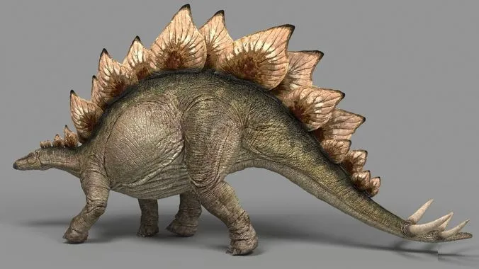

Игуанодон
Тираннозавр

Велоцираптор
Спинозавр
Трицератопс

Меловой период, или мел, — последний период мезозойской эры. Начался 145,0 млн лет назад, закончился 66,0 млн лет назад. Продолжался, таким образом, около 79 миллионов лет — самый продолжительный из периодов мезозойской эры и фанерозоя в целом. На суше преобладали разнообразные растительноядные, хищные динозавры и летающие ящеры (птерозавры), многие из которых имели гигантские размеры. Климат мелового периода в целом был тёплым. Ледниковые шапки на Северном и Южном полюсах отсутствовали. В конце мела произошло резкое похолодание, вызванное метеоритной бомбардировкой поверхности Земли и вулканизмом, что привело к крупнейшкму вымиранию в истории Земли.
Давайте проверим вашу внимательность! Среди этих 10 динозавров есть 3 не из Мелового (66-145млн.лет назад) а из позднего Юрского периода (145-202 млн.лет назад). После нажатии на кнопку [ИГРАТЬ] выберите 3-х динозавров из Юрского периода и нажмите на кнопку [ПРОВЕРИТЬ]
Меловой период стал временем расцвета и одновременно заката эры динозавров. Вот ключевые особенности:
Для более подробного изучения рекомендуем: Электронный учебник-энциклопедия Радченко Ю. и Федоровой К.